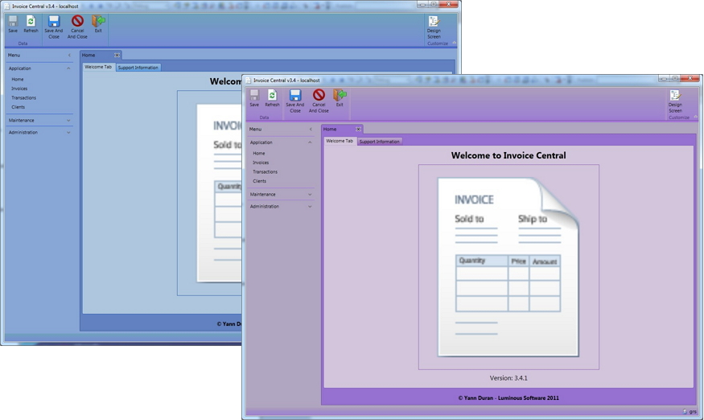
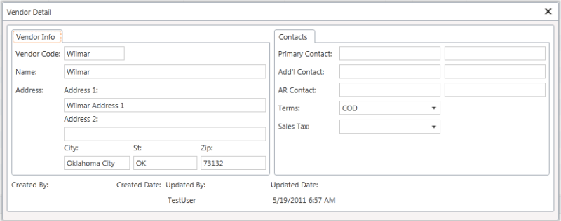
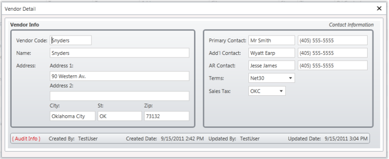
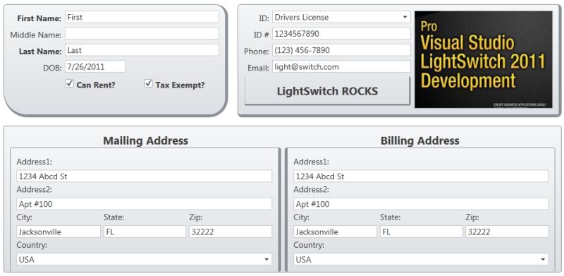
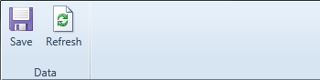
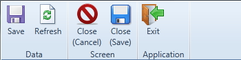
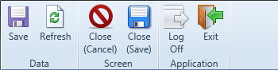

LightSwitch Development
Yann's Book#
From the back cover:
Microsoft Visual Studio LightSwitch 2011 is a rapid application deployment tool that lets power users and administrators build data-centric business applications for the desktop, cloud, and web in just a few clicks, with no code required.
But more advanced developers and business users will hunger for more:
- how do you design complex screens?
- how do you query data using LINQ and other syntax structures?
- how do you secure your application?
Pro Visual Studio LightSwitch 2011 Development answers these questions and more as authors Tim Leung and Yann Duran cover this breakthrough product and its operations and structure under the covers. Both Yann and Tim were awarded Microsoft 2011 Community Contributor Awards for their LightSwitch expertise and support.
For serious developers building, enhancing and deploying advanced business applications using LightSwitch, Pro Visual Studio LightSwitch 2011 Development is the guide for going beyond the "click-and-you're-done" interface, while still maintaining the elegance and convenience of rapid application development.
Yann's Extensions#
Luminous Themes#
7.6K+ installs | 5-star rating | VS 2010 only#
Two LightSwitch 2011 themes. Luminous Themes was the first community-based theme extension.

Click here to download Luminous Themes, or download it from the Visual Studio Marketplace.
Luminous Controls#
9.9K+ installs | 5-star rating | VS 2010 only#
A small collection of LightSwitch 2011 custom controls, comprising:
- a customisable TextBlock control
- a customisable GroupLayout control
Without Luminous Controls#

With Luminous Controls (simple)#

(Images courtesy of Garth Henderson)#
With Luminous Controls (advanced)#

(Images courtesy of PowerBala)#
Click here to download Luminous Controls, or downdload it from the Visual Studio Marketplace.
Luminous LightSwitch Types#
6.2K+ installs | 4.5-star rating | VS 2010 only#
A small collection of custom LightSwitch business types (Percent type, ISBN type, Link type, Password type).
- a Password type (that hides the characters being typed, as well as validating several optional conditions)
- a Link type (that allows you to enter/edit a URL, as well as launch a browser with it)
- a Percent type (that stores the value as a decimal, but displays it as a percentage)
- an ISBN type (that validates both ISBN-10 & ISBN-13 numbers)
Click here to download Luminous LightSwitch Types, or download it from the Visual Studio Marketplace.
Luminous LightSwitch Commands#
6.8K+ installs | 5-star rating | VS 2010 only#
Small collection of global LightSwitch commands.
Without Luminous LightSwitch Commands:#

A Desktop App With Luminous LightSwitch Commands:#

A Web App With Luminous LightSwitch Commands:#

Click here to download Luminous LightSwitch Commands, or download it from the Visual Studio Marketplace